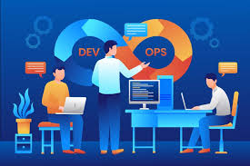

Assunto
Engenheiros DevOps
São engenheiros que atuam nas pontas entre as equipes de desenvolvimento(dev) e operações(ops). Eles devem abranger um grande conhecimento em desenvolvimento, infraestrutura, ferramentas de automação e gerenciamento de equipes, tudo isso para promover a colaboração na equipe que está para fazer a entrega contínua de softwares e infraestrutura de nuvem de dados para a empresa a qual trabalham.
Ler mais sobre o assunto